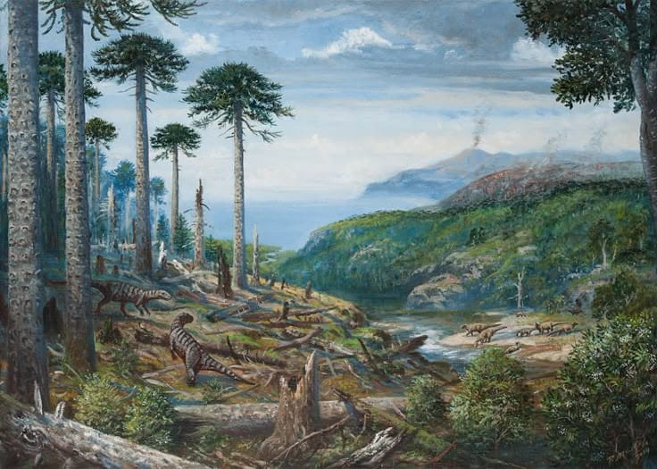
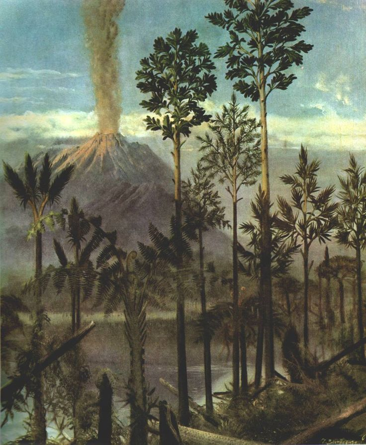
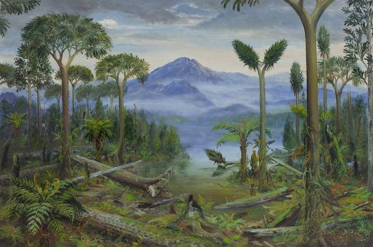
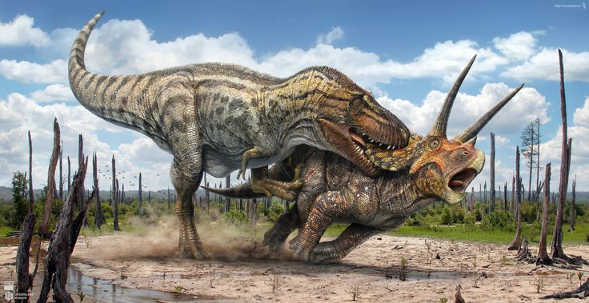
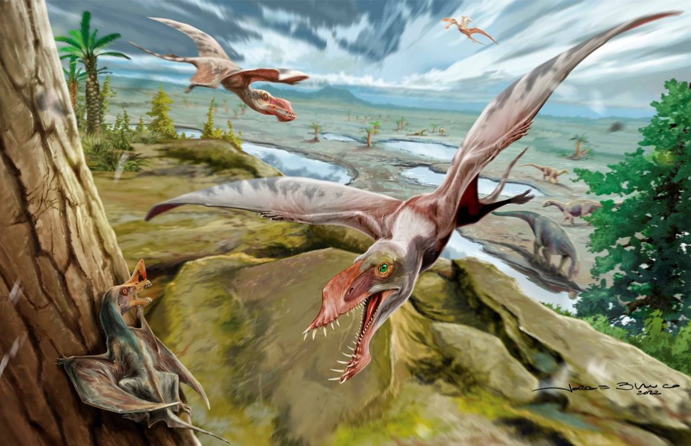
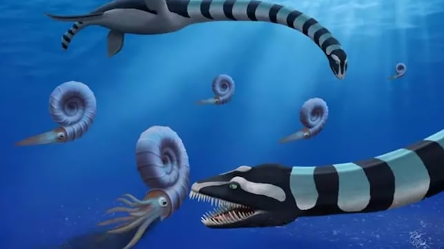
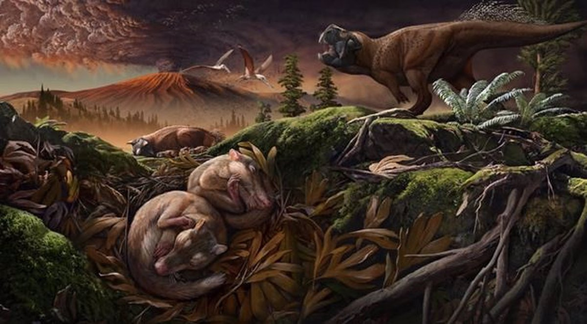
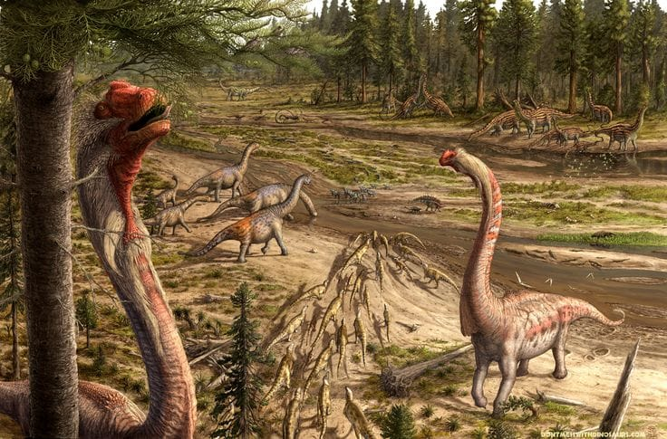
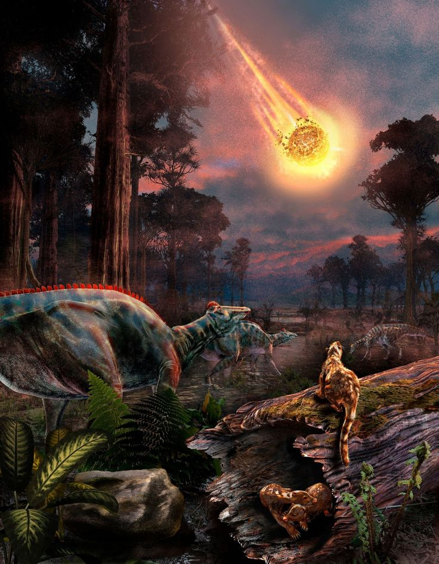

El Cretacico
El Cretácico es el tercer y último período y sistema del Mesozoico en la escala temporal geológica. Sucede al Jurásico y precede al Paleógeno (primer período del Cenozoico). Comenzó hace 143,1 millones de años y terminó hace 66 millones de años. Con una duración de unos 77 millones de años, es el período del Fanerozoico más extenso, y es, incluso, más largo que toda la era del Cenozoico. Su nombre proviene del latín creta, que significa «tiza», y fue definido como un período independiente por el geólogo belga Jean d'Omalius d'Halloy en 1822, basándose en estratos de la cuenca parisina (Francia). El término Cretáceo, con el que también se le conocía antiguamente, ha quedado completamente obsoleto.
Una escena del Cretácico.
El Cretácico está dividido en dos grandes subunidades: Cretácico inferior y Cretácico superior.
La vida en mares y tierra aparecía como una mezcla de formas modernas y arcaicas, sobre todo de ammonites. Como ocurre con la mayoría de las eras geológicas, el inicio del período es incierto por unos pocos millones de años. Sin embargo, la datación del final del período es relativamente precisa, pues esta se hace coincidir con la de una capa geológica con fuerte presencia de iridio, que parece coincidir con la caída de un meteorito en lo que ahora corresponde con la península de Yucatán y el golfo de México. Este impacto pudo provocar la extinción masiva que ocurrió al final de este período, conocida como el evento K/Pg. Este acontecimiento marca el fin de la Era Mesozoica.
A mediados del Cretácico, se dio la formación de más del 50 % de las reservas mundiales de petróleo que se conocen en nuestros días, de las cuales se destacan las concentraciones localizadas en los alrededores del golfo Pérsico y en la región entre el golfo de México y la costa de Venezuela.


EL CRETACICO
Durante el Cretácico, el nivel de los mares estaba en continuo ascenso. Este crecimiento llevó al nivel del mar hasta cotas jamás alcanzadas anteriormente, incluso zonas anteriormente desérticas se convirtieron en llanuras inundadas. En su punto máximo, solamente un 18 % de la superficie de la Tierra estaba sobre el nivel de las aguas (hoy en día la superficie emergida es del 29 %).
El supercontinente Pangea se fue dividiendo durante el Mesozoico para dar lugar a los continentes actuales, aunque con posiciones sustancialmente diferentes. A principios del Cretácico existían dos supercontinentes: Laurasia y Gondwana, separados por el mar de Tetis. A finales del Cretácico los continentes comienzan a adquirir formas semejantes a las actuales. La progresiva separación de los continentes (o de las placas tectónicas por la deriva continental) fue acompañada por la formación de amplias plataformas y arrecifes.
El sistema de fallas del Jurásico inferior había separado Europa, África y el continente norteamericano, aunque estas masas permanecieron próximas entre sí. La India y Madagascar se estaban alejando de la costa oriental africana. En la India se produjo un episodio de vulcanismo masivo entre finales del Cretácico y principios del Paleoceno. La Antártida y Australia, todavía juntas, se alejaron de Sudamérica y derivaron hacia el este. Estos movimientos crearon nuevas vías marinas, entre ellas los primitivos Atlántico septentrional y meridional, así como el mar Caribe y el océano Índico.
Mientras el Atlántico se ampliaba, las orogenias que habían empezado durante el Jurásico continuaron en la cordillera de Norteamérica, mientras que la Orogenia Nevada fue seguida por otras orogenias como la Orogenia Laramide. Una importante masa de agua se extendía desde las aguas del Polo Norte hasta la península de Yucatán y México. Otra vía marina cruzó África a través de la región del Sahara central. El mar de Tetis, que anteriormente limitaba con el sur de Europa, creció hasta cubrir las islas británicas, Europa central, el sur de Escandinavia y la Rusia europea.
El efecto de todo ello fue la división de la Tierra en doce o más masas de tierra aisladas, lo cual favoreció el desarrollo de faunas y floras endémicas. Estas poblaciones producto de su aislamiento en los continentes insulares del Cretácico superior, evolucionaron hasta generar gran parte de la actual diversidad de la vida terrestre actual. En las regiones cretácicas de latitudes superiores a los 50° tanto meridionales como septentrionales se originaron enormes yacimientos de carbón. En el intervalo comprendido entre hace 120 y 75 millones de años, el mar de Tetis rebosaba de microplancton que se convirtió en petróleo (más de la mitad de las reservas petrolíferas mundiales conocidas corresponden a yacimientos originados en Tetis, como el golfo Pérsico, el norte de África, el golfo de México y Venezuela). También destacó la fragmentación y destrucción de conchas y rocas en la evolución de la bioerosión.

EL CLIMA
Las temperaturas ascendieron hasta alcanzar su máximo punto hace unos 100 millones de años, durante los cuales prácticamente no existía hielo en los polos. Los sedimentos indican que las temperaturas en la superficie del océano tropical fueron entre 9 y 12 °C más cálidas que las actuales, mientras que en las profundidades oceánicas las temperaturas pudieron ser incluso entre 15 y 20 °C más altas. En realidad, el planeta no debió ser mucho más cálido que durante el Triásico o el Jurásico, pero el gradiente de temperatura entre los polos y el ecuador fue más suave; esto provocó que las corrientes de aire globales se redujeran, contribuyendo a una disminución en las corrientes oceánicas y, por lo tanto, a océanos más estancados que en la actualidad, como lo evidencian extensas capas de pizarra. Después del Cretácico medio, las temperaturas comenzaron un lento descenso que se aceleró progresivamente, y en los últimos millones de años de ese período, la temperatura media anual en el oeste de Norteamérica había disminuido desde los 20 °C hasta aproximadamente 10 °C.

PaleoZoologia
Dinosaurios
Dinosaurios herbívoros
Ornitópodos:
Iguanodon: uno de los primeros dinosaurios conocidos por la ciencia.
Hadrosaurios o “dinosaurios con pico de pato” (como Corythosaurus, Lambeosaurus), con crestas óseas y posiblemente sonidos complejos.
Ceratopsios:
Triceratops, Styracosaurus, Pachyrhinosaurus — con grandes cuernos y escudos craneales para defensa y exhibición.
Anquilosaurios:
Ankylosaurus: acorazado, con una poderosa maza ósea en la cola.
Pachycefalosaurios:
Pachycephalosaurus: con un cráneo muy grueso, posiblemente usado en combates rituales.
Dinosaurios carnívoros
Terópodos grandes:
Tyrannosaurus rex: uno de los depredadores terrestres más conocidos y poderosos.
Giganotosaurus y Mapusaurus en América del Sur.
Terópodos pequeños y medianos:
Velociraptor, Deinonychus, Troodon: ágiles, inteligentes y posiblemente con plumas.
Algunos terópodos desarrollaron comportamientos sociales complejos y técnicas de caza en grupo.

Aves primitivas y modernas
Durante el Cretácico, las aves verdaderas comenzaron a diversificarse a partir de los dinosaurios terópodos emplumados. A diferencia del Archaeopteryx del Jurásico, muchas aves del Cretácico ya poseían adaptaciones más modernas para el vuelo.
Ichthyornis: ave marina con dientes.
Hesperornis: adaptada a la natación, como un pingüino con dientes.
Aves del grupo Enantiornithes, hoy extintas, que compartieron hábitats con aves modernas primitivas.

Reptiles voladores (Pterosaurios)
En el Cretácico, los pterosaurios alcanzaron tamaños colosales:
Quetzalcoatlus: uno de los animales voladores más grandes de todos los tiempos (envergadura de hasta 12 m).
También existían formas pequeñas, como Pteranodon, con crestas craneales distintivas.
Algunos vivían en costas, otros en bosques interiores, y algunos posiblemente planeaban grandes distancias.

Reptiles marinos
Los mares del Cretácico eran ricos en grandes reptiles marinos, depredadores dominantes de los ecosistemas oceánicos.
Mosaurios: como Mosasaurus o Tylosaurus, reptiles marinos gigantescos, parientes lejanos de los lagartos modernos.
Plesiosaurios: con cuello largo y cuatro aletas, como Elasmosaurus.
Ictiosaurios: aunque comenzaron a desaparecer durante el Cretácico temprano, algunos como Platypterygius aún sobrevivían en mares específicos.
Tiburones primitivos y peces óseos dominaban los océanos junto a moluscos como amonites y belemnites.

Invertebrados marinos
Amonites: moluscos con concha espiral, muy abundantes hasta su extinción al final del período.
Belemnites: similares a calamares con conchas internas.
Erizos de mar, moluscos bivalvos, corales rudistas (formadores de arrecifes).
Muchos de estos organismos sufrieron la extinción masiva al final del Cretácico.
Mamíferos primitivos
Aunque aún pequeños y discretos, los mamíferos del Cretácico empezaban a diversificarse lentamente:
Formas insectívoras y omnívoras, como Didelphodon (parecido a un zarigüeya primitiva).
Algunos ya tenían marsupios o placentas primitivas.
Se adaptaron a la vida nocturna para evitar competir con los dinosaurios.

Flora
Pocos acontecimientos han transformado tan profundamente el paisaje y la ecología terrestre como la aparición de las angiospermas, las plantas con flores. No obstante, durante el Cretácico inferior, las gimnospermas seguían siendo las formas dominantes de vegetación. Dentro de este grupo, las coníferas eran las únicas que continuaban prosperando, mientras que otros grupos como las cícadas y los ginkgos estaban en retroceso, y las bennettitales se encontraban en vías de extinción.
Las primeras angiospermas aparecieron en algún momento del Cretácico inferior e iniciaron una expansión progresiva que las llevó a diversificarse hasta alcanzar las aproximadamente 250,000 especies actuales, en contraste con las cerca de 550 especies modernas de coníferas. A diferencia de las gimnospermas, que producen semillas desnudas, las angiospermas encierran sus semillas dentro de un ovario, lo que ofrece protección frente a hongos, desecación y ataques de insectos.
Los fósiles más antiguos de angiospermas datan de hace aproximadamente 130 a 120 millones de años. Se trata principalmente de granos de polen, conocidos como Clavatipollenites, encontrados en formaciones del sureste de Inglaterra. Hacia los 120-100 millones de años atrás, tanto el polen como las hojas de estas plantas comenzaron a aparecer con mayor frecuencia en los registros fósiles. En regiones como el este de Norteamérica, Rusia e Israel se han hallado flores y frutos de angiospermas primitivas excepcionalmente bien conservadas, muchas de ellas relacionadas con plantas actuales como las magnolias y los sicomoros.

Extincion De Una Dinastia
El acontecimiento que marcó el final del Cretácico se conoce como evento K–T (o K/T), por las siglas en alemán Kreide/Tertiär, que significan Cretácico y Terciario, respectivamente. No obstante, en la actualidad se prefiere el término K–Pg (o K/Pg), correspondiente a Cretácico–Paleógeno, luego de que la Comisión Internacional de Estratigrafía descartara formalmente el uso del término “Terciario”.
La extinción masiva que tuvo lugar en ese límite geológico causó la desaparición de diversos grupos emblemáticos del Mesozoico, como los dinosaurios no avianos, los pterosaurios, los grandes reptiles marinos —incluidos los plesiosaurios y mosasaurios—, así como numerosos organismos marinos como los ammonites, los rudistas y los inocerámidos. Aunque organismos planctónicos como el nannoplancton calcáreo y los foraminíferos planctónicos sufrieron importantes pérdidas, lograron recuperarse durante el posterior Cenozoico.
A pesar de su impacto ecológico, esta extinción no fue la más severa de la historia de la vida en la Tierra. La extinción del final del Pérmico fue considerablemente más catastrófica. En el caso del Cretácico-Paleógeno, algunos grupos ya mostraban una disminución progresiva en su diversidad durante los últimos diez millones de años del período, mientras que otros parecen haberse extinguido de manera súbita justo en el momento de la transición. También se han identificado casos erróneamente atribuidos al evento K–Pg, como los ictiosaurios, que en realidad se habían extinguido mucho antes.
Entre los grupos que lograron sobrevivir se encuentran la mayoría de las plantas y numerosos animales terrestres, como insectos, caracoles, ranas, salamandras, tortugas, lagartos, serpientes, cocodrilos y mamíferos placentarios. En los ecosistemas marinos, muchos invertebrados, como las estrellas de mar, los equinoideos, los moluscos y los artrópodos, así como los peces, también persistieron más allá del límite K–Pg. Cabe señalar que durante el Albiense, un poco antes del final del Cretácico, se produjo un episodio importante de extinción que afectó especialmente a los insectos.
Entre las posibles causas de la extinción del K–Pg se han propuesto diversas hipótesis. Una de ellas apunta a cambios climáticos importantes, que habrían afectado principalmente a las faunas tropicales. Esto se reflejó en la desaparición de organismos como los rudistas y otros habitantes del mar de Tetis, mientras que las faunas de latitudes más altas habrían permanecido relativamente indemnes.
Una posible explicación de este enfriamiento climático se encuentra en los movimientos tectónicos que estaban separando a Australia de la Antártida. Este proceso habría canalizado frías corrientes profundas del océano austral hacia las cálidas aguas tropicales del mar de Tetis. La alteración del equilibrio térmico, unida al descenso del nivel del mar, habría contribuido a enfriar el clima global y a provocar condiciones extremas en los interiores continentales, reduciendo significativamente la estabilidad climática que ofrecían los mares cálidos.
Finalmente, otra causa ampliamente aceptada es el impacto de un gran asteroide en la península de Yucatán, que dejó como huella el cráter de Chicxulub. Este evento habría desencadenado una cadena de catástrofes ambientales —incendios globales, oscurecimiento atmosférico, lluvia ácida, interrupción de la fotosíntesis y un invierno prolongado— que precipitaron la extinción de muchas especies.
